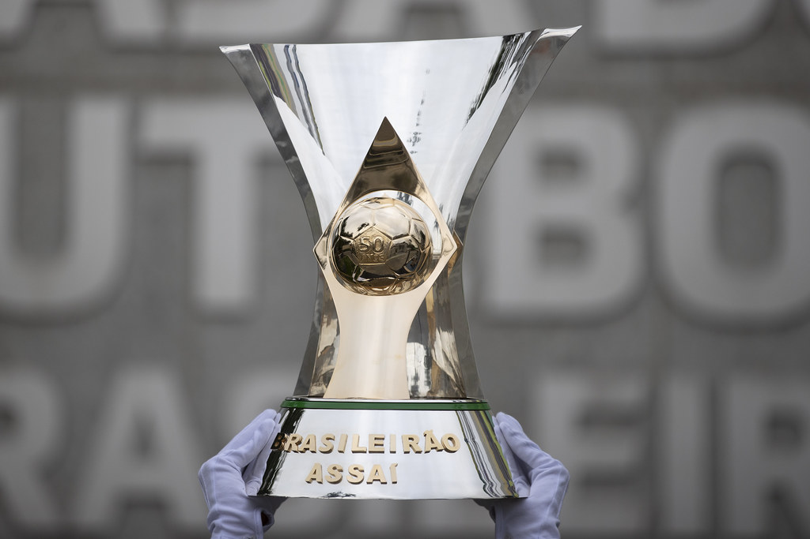
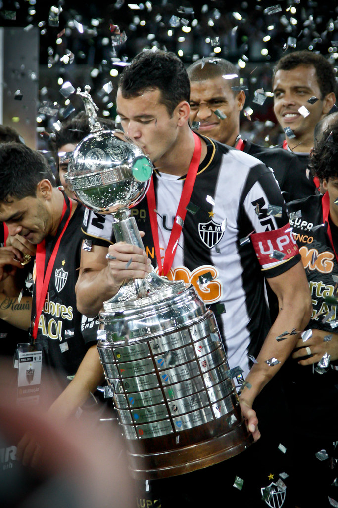
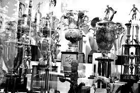

Nesse tópico iremos rever os títulos mais memoráveis do Galo.
Brasileirão 1971
Provavelmente Você nem era vivo, mas saiba que o Atlético começou a disputar o brasileirão em 1971 e nessa mesma edição acabou ganhando seu primeiro titulo. O time do Galo na epóca era composto por brilhantes jogadores, como: João Leite, Luisinho, Toninho Cerezo, Vanderlei(Palinha), Ângelo, Marcelo Oliveira, Paulo Isidoro, José lázaro(ziza), Éder aleixo, e José Reinaldo.
.jpg)
Taça do Brasileirão 1971
Brasileirão 2021
Uma de suas conquistas recentes, o tão aguardado título brasileiro veio depois de 50 anos junto com a copa do Brasil e a tríplice coroa, todo atleticano esperava por aquele momento na virada histórica contra o Bahia(3x2). O time de 2021 contava com um dos melhores elencos do Brasil na época, e com um técnico lendário no comando do atlético o Cuca, o elenco era composto de estrelas como: Givanildo(HULK),Guilherme Arana, Marcos da Silva(keno), Éverson, Matías Zaracho, Eduardo Vargas e Nacho Fernández.

Taça do Brasileirão 2021
Libertadores 2013
Como não falar de um dos maiores títulos do galo na grande atuação do Goleiro Victor, dos grandes gols de Ronaldinho e das viradas épicas. O elenco da época era formado por nomes conhecidos como o treinador Alexi Stival(cuca), Diego Tardelli e Réver, mas o elenco dos famosos era composto por: Victor, Marcos Rocha, Réver,Leonardo Silva, Jemerson, Leandro Donizete, Jesús Dátolo, Ronaldinho Gaúcho, Alecsandro, Luan, Fernandinho, Diego Tardelli e João Alves(jô).

Taça da Libertadores da América
Copa do Brasil 2014
Em uma campanha histórica,eliminando times grandes como, flamengo, Palmeiras e corinthians, o Galo ganhou a copa do Brasil de 2014 em cima do seu rival cruzeiro (2x0 Independência), (1x0 Mineirão), ao todo 3x0 no placar agregado. Os craques do time eram: Victor, Marcos Rocha, Jemerson, Leonardo Silva, Douglas Santos, Leandro Donizete, Rafael Carioca, Dátolo, Luan e Diego Tardelli, contanto com o técnico Levir Culpi.

Taça da Copa do Brasil
Taça campeão do gelo
O Atlético chegou em 27 de outubro de 1950 em frankfurt para disputar uma série de amistosos contra times alemães, o galo saiu com 6 vitórias, 2 empates e 2 derrotas. o elenco tinha ídolos como: Zé do Monte, Vavá e Kafunga.
